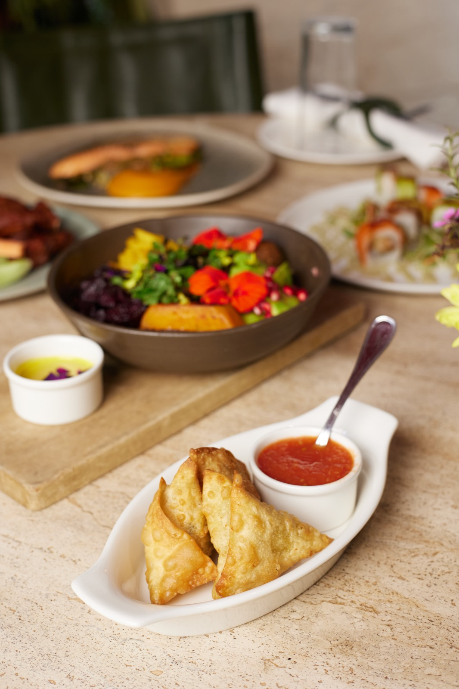
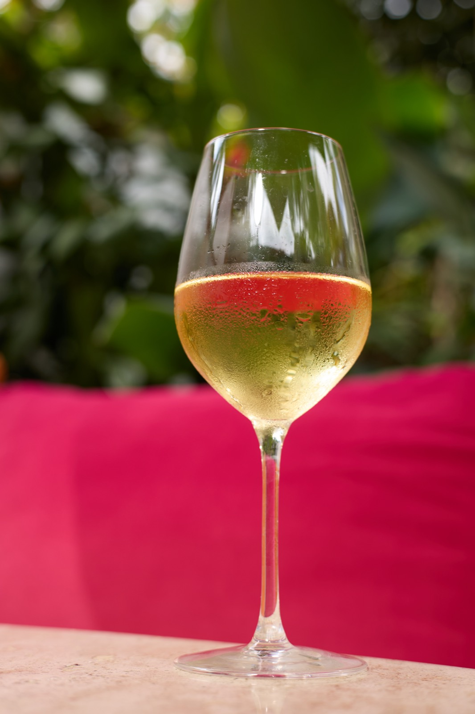
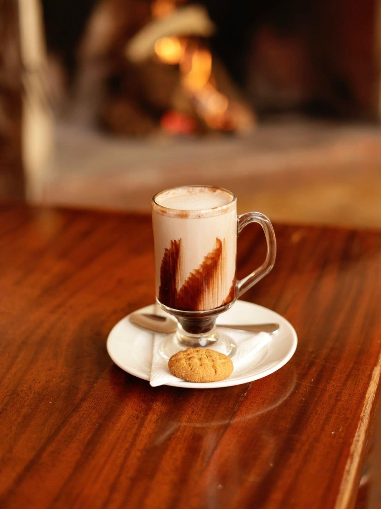
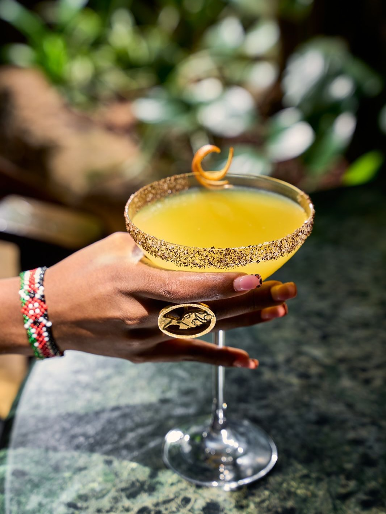

Breakfast
Eggs, sourdough and strong coffee, from eight in the morning under the trees.
See the menu
Our Food
Harvested at 05:30, on the plate by lunch. What follows changes with the rains — and we think that is the best thing about it.
Eggs, sourdough and strong coffee, from eight in the morning under the trees.
See the menu
What the farm sent up this week, cooked over one slow fire and written fresh each day.
See the menu
Cake, scones and a pot for the table, in the green, while the afternoon goes long.
See the menu
Ingredients & Farmers
A great deal of what we serve comes off our own farm — herbs, greens and roots harvested at 05:30 and in the kitchen by lunch. The rest comes from smallholders around Karen, Limuru and the Rift who have been supplying this kitchen for years.
We buy whole crops rather than cherry-picking, we pay on delivery, and we plant around what they tell us grows well. It means the menu bends to the season instead of the other way round. It also means the people who grow your food are not strangers to us.
Preparation
Our salmon arrives whole. It is cured here, hung in our own smokehouse over smouldering herbs, and left alone for the best part of a day. There is no way to hurry it and no reason to try.
The same patience runs through the rest of the kitchen — stocks reduced overnight, lamb held eight hours over the coals, bread proved slowly and baked at dawn. None of it is visible on the plate, and it shouldn’t be. You should simply notice that it tastes like someone meant it.


A short, opinionated list — mostly South African and French, chosen to sit well outdoors.
Open the wine list
Kenyan single-origin, roasted locally and served properly — espresso to a pot for the table.
Open the coffee menu
The Dawa, dressed for the occasion — and mint and lemongrass cut from the garden you are in.
Open the cocktail menu
Best eaten outside, under the trees, with the afternoon going long. Take a table on the lawn and stay as late as you like — nobody here will hurry you.